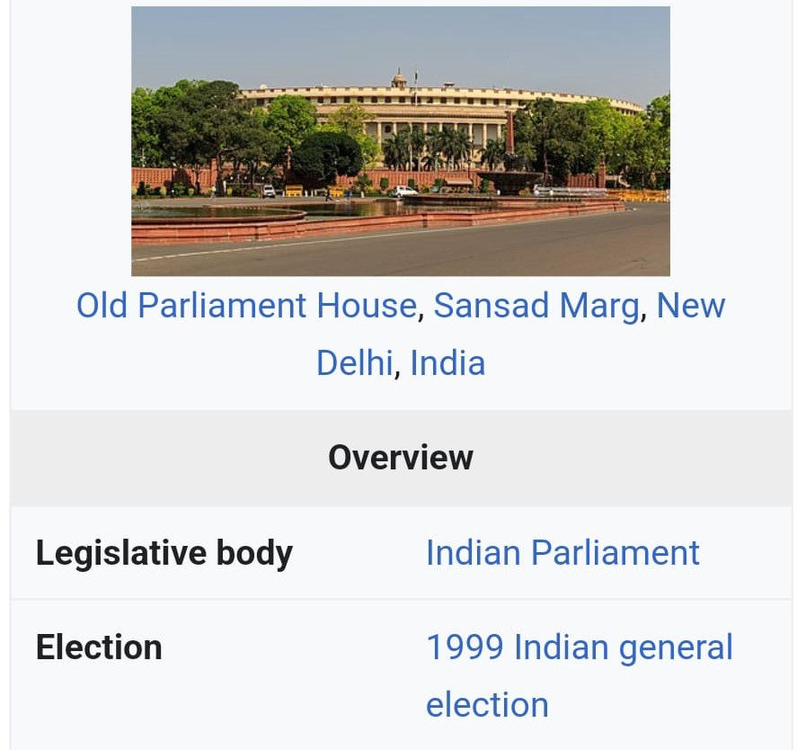
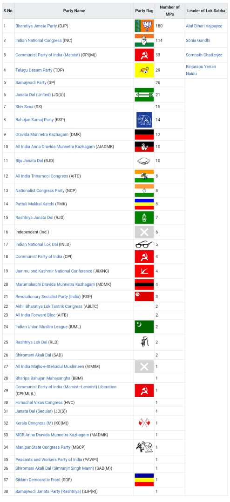

Analysis of 13Th Lok sabha

This is where 13th lok sabha was conducted
The 13th Lok Sabha (10 October 1999 – 6 February 2004) is the thirteenth session of the Lok Sabha
(House of the People, or lower house in the Parliament of India).
It was convened after 1999 Indian general election held during September–October 1999.
This majority group in the Lok Sabha during this period was the National Democratic Alliance,
a nationalist group led by the Bharatiya Janata Party, which won 270 seats, 16 more than 12th Lok Sabha.
The NDA, under the leadership of Atal Bihari Vajpayee completed its term until the next general elections
of May 2004 for the next 14th Lok Sabha. This was the first non-INC government to complete the full term
.
Four sitting members from Rajya Sabha, the Upper House of Indian Parliament,
were elected to 13th Lok Sabha after the 1999 Indian general election.
Important members
edit
Speaker:
G. M. C. Balayogi from 22 October 1999 to 3 March 2002
Manohar Joshi from 10 May 2002 to 2 June 2004
Deputy Speaker:
P M Sayeed from 27 October 1999 to 2 June 2004
Secretary General:
G C Malhotra from 14 July 1999 to 28 July 2005
Leader of the House
Atal Bihari Vajpayee (13 October 1999 to 6 February 2004)
Leader of the Opposition
Sonia Gandhi(13 October 1999 to 6 February 2004)
Minister of Parliamentary Affairs
Pramod Mahajan (13 October 1999 to 29 January 2003)
Sushma Swaraj (29 January 2003 to 22 May 2004)
